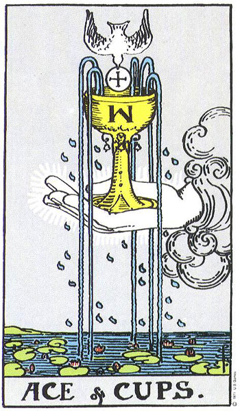
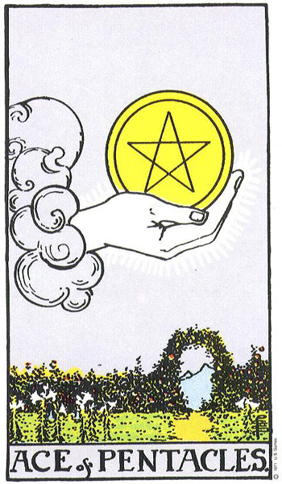

타로란 무엇인가
타로란 무엇인가 개요
타로는 78장의 카드로 이루어진 상징 체계로, 22장의 메이저 아르카나와 56장의 마이너 아르카나로 나뉜다. 본래 15세기 이탈리아에서 즐기던 카드게임(타로키)으로 출발했으나, 18세기 후반을 거치며 점술과 자기성찰의 도구로 재해석되었다. 오늘날 타로는 미래를 결정짓는 예언 장치가 아니라, 풍부한 상징을 통해 내면을 비추는 거울로 이해된다.
🃏 78장 타로 덱 대표 카드 한눈에 보기
가장 널리 쓰이는 1909년 라이더-웨이트-스미스(RWS) 덱의 대표 카드들입니다. 메이저의 바보·마법사와 4대 원소(완드·컵·소드·펜타클) 에이스 카드를 살펴보세요.





핵심 한눈에
타로는 메이저 22장과 마이너 56장을 합친 78장 카드 체계다. 이탈리아 카드게임에서 기원해 18세기 점술화되었고, 1909년 라이더-웨이트-스미스 덱으로 대중화되었다. 핵심은 '미래를 맞히는 것'이 아니라 상징을 매개로 한 자기성찰에 있다.
📚 난이도별 학습
본인의 수준에 맞춰 탭을 선택하세요. 우측 상단 언어 토글로 영어/일본어/중국어로도 학습할 수 있습니다.
🃏 한 줄로 이해하기
타로는 그림이 그려진 카드 78장이야! 별·달·탑 같은 상징 그림을 보면서 "내 마음이 지금 어떤가"를 곰곰이 생각하게 도와주는 카드지. 미래를 딱 맞히는 마법 도구가 아니라, 옛날부터 전해 내려온 상징 카드라고 보면 돼.
🤔 왜 재밌을까?
타로가 신기한 건, 카드 한 장에 누구나 아는 그림이 담겨 있기 때문이야. 별, 달, 탑, 연인… 이런 그림을 보면 사람마다 자기 이야기를 떠올리게 되거든. 그래서 타로는 "정답을 알려주는 기계"가 아니라 "질문을 던지게 하는 친구"에 가까워. 마음이 복잡할 때 카드를 펼쳐 보면, 미처 몰랐던 내 기분이 슬쩍 보이기도 해. 옛날 사람들은 이걸 점치는 데 썼지만, 사실은 나를 비춰 보는 거울 같은 거야. 카드가 미래를 정하는 게 아니라, 카드를 보며 내 생각을 정리하는 게 핵심이지!😊
🌱 꼭 알아둘 말
- 아르카나: '비밀'이라는 뜻의 옛날 말. 타로 카드를 나누는 이름이야.
- 메이저 아르카나: 인생의 큰 이야기를 담은 22장. 바보·마법사·죽음 같은 그림이 있어.
- 마이너 아르카나: 일상의 자잘한 일을 담은 56장. 네 종류로 나뉘어.
- 슈트: 마이너 56장을 나누는 네 묶음! 완드·컵·소드·펜타클이 있어.
- 덱: 78장이 다 모인 한 벌을 부르는 말이야.
📖 쉽게 풀어보기
타로 한 벌을 커다란 책이라고 생각해 봐! 메이저 22장은 '인생'이라는 책의 큰 챕터 제목 같고, 마이너 56장은 그 챕터 안의 작은 문단 같아. 카드를 뽑는 건 책을 아무 데나 펼쳐서 한 대목을 읽는 것과 비슷해. 같은 대목이라도 읽는 사람마다 다르게 느끼듯, 같은 카드도 상황에 따라 다르게 읽힌단다.
⭐ 한 장 요약
- 타로는 메이저 22장 + 마이너 56장 = 모두 78장 카드야.
- 15세기 이탈리아의 카드 게임에서 처음 시작됐어.
- 18세기 후반부터 점치고 마음을 살피는 도구로 쓰였지.
- 카드 그림은 누구나 아는 상징으로 그려져 있어.
- 타로는 미래 맞히기보다 나를 돌아보는 도구에 가까워!
이론 깊이 들어가기
타로의 역사를 따라가면 그 성격이 한 번에 형성된 것이 아님을 알 수 있다. 가장 이른 기록은 15세기 이탈리아의 카드게임 '타로키'로, 이때 카드는 점술이 아니라 트럼프 비슷한 놀이 도구였다. 메이저 아르카나에 해당하는 그림 카드들은 게임에서 으뜸패 역할을 했고, 마이너 아르카나는 오늘날의 트럼프와 유사한 네 슈트 구조를 가졌다. 타로가 점술로 결합된 것은 18세기 후반에 이르러서다. 프랑스의 앙투안 쿠르 드 제블랭은 타로에 고대 이집트의 비밀 지혜가 담겨 있다는 추정을 내놓았는데, 이는 역사적 근거가 약한 주장으로 평가된다. 비슷한 시기 '에틸라'라는 필명으로 활동한 인물이 타로를 점술 체계로 정리해 보급하면서 타로점이 본격화되었다. 이러한 흐름은 카드의 본래 용도와 후대의 해석이 분명히 다름을 보여 준다. 따라서 타로를 다룰 때는 '게임으로서의 기원'과 '점술로서의 전개'를 구분해 이해하는 태도가 필요하다.
핵심 메커니즘
📐 78장의 구조
타로 한 벌은 메이저 아르카나 22장과 마이너 아르카나 56장으로 이루어진다. 마이너 아르카나는 완드·컵·소드·펜타클의 네 슈트로 나뉘며, 각 슈트는 에이스부터 10까지의 숫자 카드와 네 장의 코트 카드를 포함한다. 메이저는 인생의 큰 원형을, 마이너는 일상의 구체적 국면을 담당하는 식으로 역할이 나뉜다고 본다.
대표 사례
📐 사례 1 — 라이더-웨이트-스미스 덱
1909년 영국에서 A.E. 웨이트의 기획과 파멜라 콜먼 스미스의 그림으로 출간된 덱으로, 오늘날 가장 널리 쓰인다. 이 덱은 마이너 아르카나의 숫자 카드에도 장면을 그려 넣어, 그림만 보고도 의미를 떠올릴 수 있게 한 점이 특징이다.
📐 사례 2 — 토트 덱
알리스터 크롤리가 기획하고 프리다 해리스가 그린 덱으로, 상징과 색채가 한층 추상적이고 밀도 높게 표현되어 있다. 라이더-웨이트-스미스 계열과 더불어 현대 타로의 두 큰 흐름으로 꼽힌다.
현대적 전개
오늘날 타로는 수백 종의 덱으로 변주되고, 점술뿐 아니라 심리 상담의 보조나 글쓰기·명상의 영감 도구로도 쓰인다. 특히 20세기 이후 융 심리학의 원형 개념과 연결되며 '상징을 통한 자기 탐색'이라는 해석이 힘을 얻었다. 이런 맥락에서 타로는 미래를 알아맞히는 장치라기보다 생각을 구조화하는 틀로 참고된다.
전문가 레벨 이해
타로를 깊이 이해하려면 그 의미가 고정된 것이 아니라 해석 전통에 따라 누적되어 왔음을 보아야 한다. 15세기 비스콘티-스포르차 가문이 남긴 호화 필사 카드처럼 초기 타로는 귀족의 놀이이자 예술품이었고, 거기에 점술적 의미는 들어 있지 않았다. 18세기 쿠르 드 제블랭과 에틸라를 거치며 카드 한 장 한 장에 상징적 의미가 부여되었고, 19세기 프랑스의 엘리파스 레비는 타로를 카발라와 연결 지어 신비주의 체계 안에 편입시켰다. 이러한 해석의 층위는 20세기 초 황금새벽회 계열의 라이더-웨이트-스미스 덱과 토트 덱에서 정점에 이르렀다. 따라서 '타로의 정통 의미'를 단일하게 말하기는 어렵고, 어떤 전통과 덱을 전제하느냐에 따라 의미가 달라진다. 전문적 관점에서 타로는 예언의 도구라기보다 상징을 조직하는 문법에 가깝다고 본다. 이 문법을 통해 사용자는 모호한 상황을 언어화하고 새로운 관점을 얻는다. 다만 이 효과를 카드 자체의 예지력으로 환원하는 것은 경계해야 한다.
최신 연구·쟁점
심리학적으로 타로의 작동에는 사람이 모호한 진술을 자신에게 들어맞는다고 느끼는 경향, 즉 바넘 효과나 콜드 리딩의 메커니즘이 관여한다는 설명이 자주 제기된다. 이는 타로가 통계적 예측력을 갖는다는 주장에는 회의적 근거가 되지만, 동시에 상징을 매개로 한 자기 투사가 성찰과 정서 정리에 도움을 줄 수 있다는 해석과 양립한다. 쟁점은 타로의 '효용'과 '예지력'을 혼동하지 않는 데 있다. 즉 타로가 미래를 안다고 단정하기는 어렵지만, 생각을 정리하는 도구로서의 가치는 별도로 논의될 수 있다.
관련 분야
- 분석심리학: 융의 원형과 집단무의식 개념은 타로 상징 해석의 주요 이론적 배경이 된다.
- 비교종교·신비주의사: 카발라, 점성술 등과 타로가 맺어 온 역사적 결합을 다룬다.
- 회의주의·심리학: 바넘 효과와 콜드 리딩 연구를 통해 점술의 작동 방식을 비판적으로 분석한다.
더 읽을거리
- "The Pictorial Key to the Tarot" — A.E. Waite
- "The Book of Thoth" — Aleister Crowley
- "Seventy-Eight Degrees of Wisdom" — Rachel Pollack
🕹️ 직접 해보기 — 타로 기본 용어 상황 판단
타로를 이루는 기본 용어와 그 뜻을 알맞게 이어 보세요.
🎮 3D 미니게임
이 챕터에서 배운 내용을 게임으로 확인해보세요. 떠 있는 보기 중 정답을 클릭!